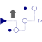

SuperSampleInterpolatedSuper-sample the clocked Real input signal and provide it linearly interpolated as clocked output signal (this is also called an Interpolator) |

|
Information
This information is part of the Modelica Standard Library maintained by the Modelica Association.
This block super-samples the clocked Real input signal u and provides it linearly interpolated between the u-values as clocked output signal y.
To be more precise: The clock of y is factor-times faster than the clock of u. At every tick of the clock of y, the value of y is set to the value of the linearly interpolated value between the last available values of u. The first activation of the clock of y coincides with the first activation of the clock of u. By default, the super-sampling factor is inferred, that is, it must be defined somewhere else. If parameter inferFactor = false, then the super-sampling factor is defined by Integer parameter factor.
For control applications, this block is better suited as block SuperSample since it does not induce "vibrations".
Example
The following
example
samples a sine signal with a periodic clock of 20 ms period, and
then super-samples the resulting clocked signal with a factor of 3
and interpolates the result linearly:
 |
 |
|
| model | simulation result |
As can be seen, block superSampleIpo introduces 3 additional clock ticks for the output y and determines the values at these clock ticks, so that the last two available values of the input u are linearly interpolated. The super-sampling factor = 3 is displayed in the icon of the superSampleIpo block. Note the up-arrow in the icon of the SuperSampleInterpolation block indicates that the clock of superSampleIpo.y is faster as the clock of superSampleIpo.u.
Parameters (2)
| inferFactor |
Value: true Type: Boolean Description: = true, if super-sampling factor is inferred |
|---|---|
| factor |
Value: 1 Type: Integer Description: Super-sampling factor >= 1 (if inferFactor=false) |
Connectors (2)
| u |
Type: RealInput Description: Connector of clocked, Real input signal |
|
|---|---|---|
| y |
Type: RealOutput Description: Connector of clocked, Real output signal |
Used in Examples (2)
|
Modelica.Clocked.Examples.Elementary.RealSignals Example of a SuperSampleInterpolated block for Real signals |
|
|
Modelica.Clocked.Examples.Elementary.RealSignals Example of an UpSample block for Real signals combined with FIR filter blocks |